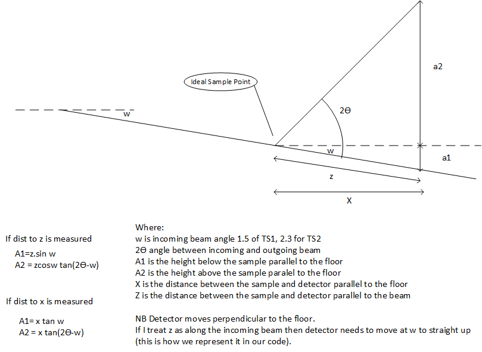
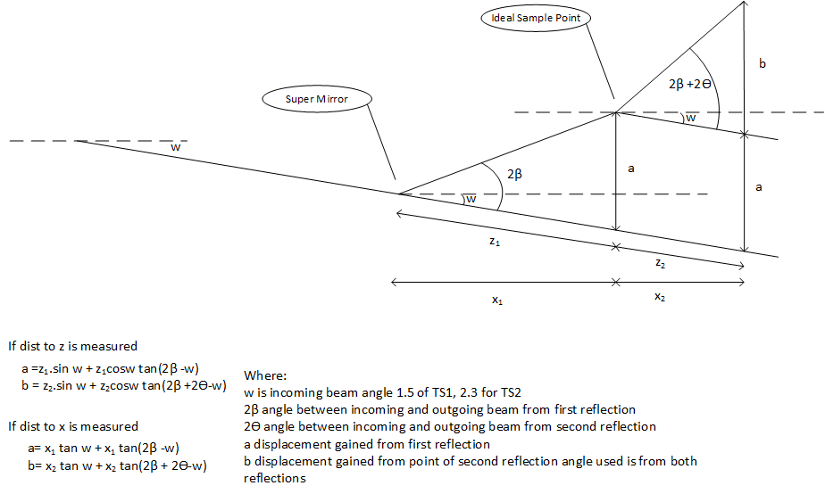
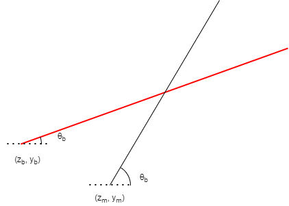

Beam height calculation
In a reflectometry instrument the height above the straight through beam can be calculated using the following diagram. It is based on the incoming angle of that beam.

If there are two angles use the following calculation:

Internal Calculation
IBEX reflectometry IOC performs a more general calculation for each component. The interaction is between an incoming beam at any angle and a movement axis at any angle.

The maths for this is:
y - y_b = (z - z_b) tan \theta_b
y - y_m = (z - z_m) tan \theta_m
Where:
z: is distance along the straight through beam
y: is distance perpendicular to straight through beam
theta: is the angle the axis/beam makes with the straight through beam
_b: is subscript indicating the beam
_m: subscript indicating the movement axis
These can be substituted and rearranged to give the intersection point at:
z = 1/(tan \theta_m - tan \theta_b) * (y_b - y_m + z_m * tan \theta_m - z_b * tan \theta_b)
y = tan_b * tan_m / (tan \theta_b - tan \theta_m) * (y_m / tan \theta_m - y_b / tan \theta_b + z_b - z_m)
There is a special case where the angles are the same and there is no intersection and then there are special cases for theta angles of 0, 180. These are all determined in the code if the angles are closer than 1e-12 to the given value. The code is https://github.com/ISISComputingGroup/EPICS-refl/blob/master/ReflectometryServer/movement_strategy.py#L31